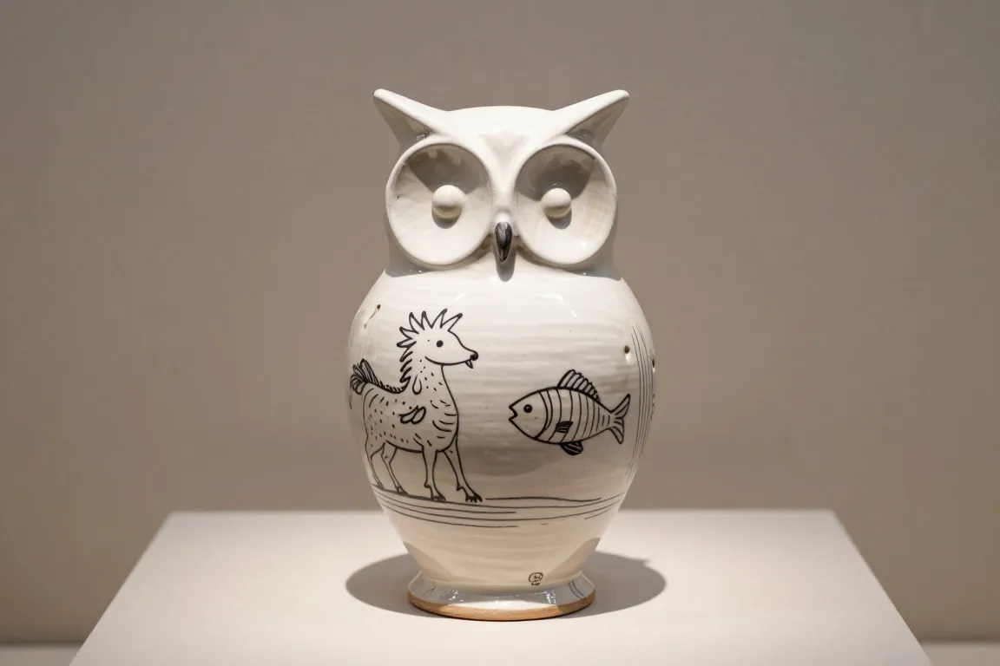

Keramikk av malere og billedhuggere ved de provençalske pottemakeriene i Vallauris. Picasso gjorde dreide vaser til ugler, okser og kvinner, og malte tallerkener i engobe og voksreservasjon, i opplag på noen hundre.

Kjerneidé
En maler behandler pottemakerens vase som en kropp og tallerkenen som et lerret, og leker med håndverket på en glad, rask og enkel måte.
Designprinsipper
Start fra en dreid form: en flaske, en mugge eller en tallerken fra pottemakerhjulet.
Endre formen for hånd mens den er våt: klyp, bøy, skjær og sett sammen til en ugle, en kvinne eller en okse.
Tegn på den lærharde leiren med en kniv, og skjær linjer gjennom et lag slipp.
Mal med engober i sort, hvitt, oker og grønt, og bruk voks til å avvise glasuren.
Hold linjen rask og enkel, som i en tegning: noen få strøk gir et ansikt, en fisk eller en faun.
Bruk et hvitt eller rødt leirgods, og la deler av leiren stå bar.
Lag et opplag på 25 til 500, med et stempel eller et inngravert merke fra pottemakeriet og kunstneren.
Velg middelhavsmotiver: fauner, fisker, okser, ugler, duer og kvinner.